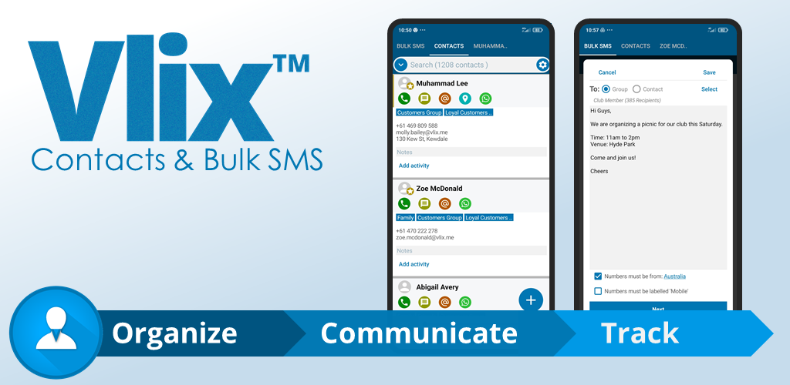

2021 - Vlix, Mobile App
Xamarin
ASP.NET
PostgreSQL
Entity Framework
In 2021, I created and published my own Android/iOS App using Microsoft Xamarin.
The App was very native, as it accessed platform specific functions such as 'Contacts' and 'Notifications'.
A comprehensive event logging system was configured with Google Firebase to analyze customer interaction with the App.
Back end was developed using Dot Net 5 with PostgreSQL and Entity Framework Database layer.
I used Github Actions to quickly deploy back end servers for fast scalability.
